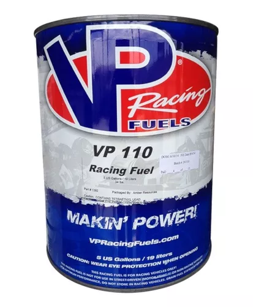
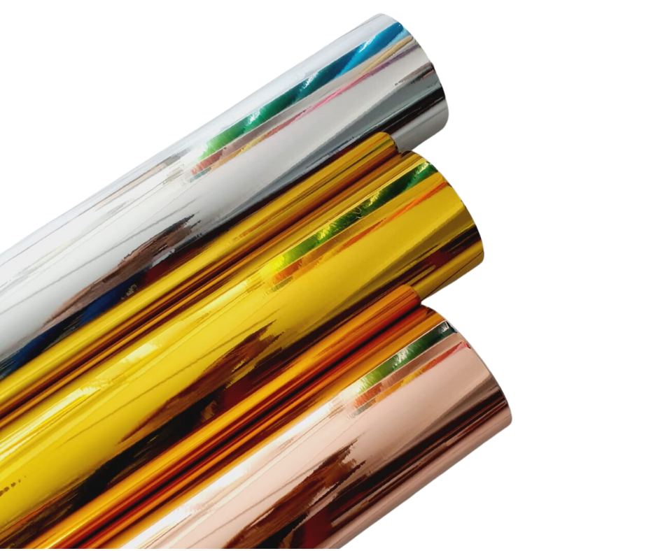
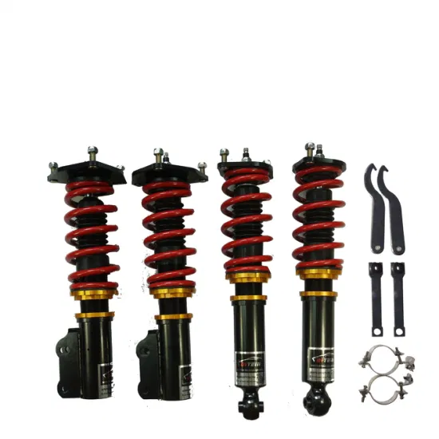

Las láminas se degradan con la exposición prolongada al sol y a los contaminantes atmosféricos.
re que sea posible, guárdelo en un garaje o, al menos, en una zona con sombra durante el día.
Por la noche, proteja el automóvil del rocío o la lluvia, ya que pueden contener contaminantes ácidos.
Poner vinilo a un coche en México: ¿es económico? Para que te des una idea de cuánto cuesta este acabado, un coche de tamaño mediano se forra por aproximadamente $4,500 pesos.
proceso tarda alrededor dos días y el precio suele incluir la mano de obra.
Dependiendo de su duración hay algunos que aguantan hasta los ocho años sin alterar ni un ápice de sus propiedades,
incluso más, si somos capaces de evitar, por ejemplo, que la radiación solar incida sobre el vinilo.
Las láminas se degradan con la exposición prolongada al sol y a los contaminantes atmosféricos.
re que sea posible, guárdelo en un garaje o, al menos, en una zona con sombra durante el día.
Por la noche, proteja el automóvil del rocío o la lluvia, ya que pueden contener contaminantes ácidos.
 |
Descripción del labial
|
 | Descripción del labial
|
SUPER CARS
|
VP $170.00 |
Filtro de alto flujo $170.00 |
 Supercargador $170.00 |
 turbo $170.00 |
 vinil metalico $170.00 |
 amortiguadores $170.00 |
Un vinilo es un compuesto fabricado principalmente de Policloruro de Vinilo (PVC), formado por tres capas diferentes.
Un film de PVC: Esta es la capa base, que puede ser de diferentes colores.
Un adhesivo: Capa que va junto al film de PVC y es utilizada para la fijación del vinilo.


 Actividad 10
Actividad 12
Actividad 16
Actividad 17
Actividad 10
Actividad 12
Actividad 16
Actividad 17